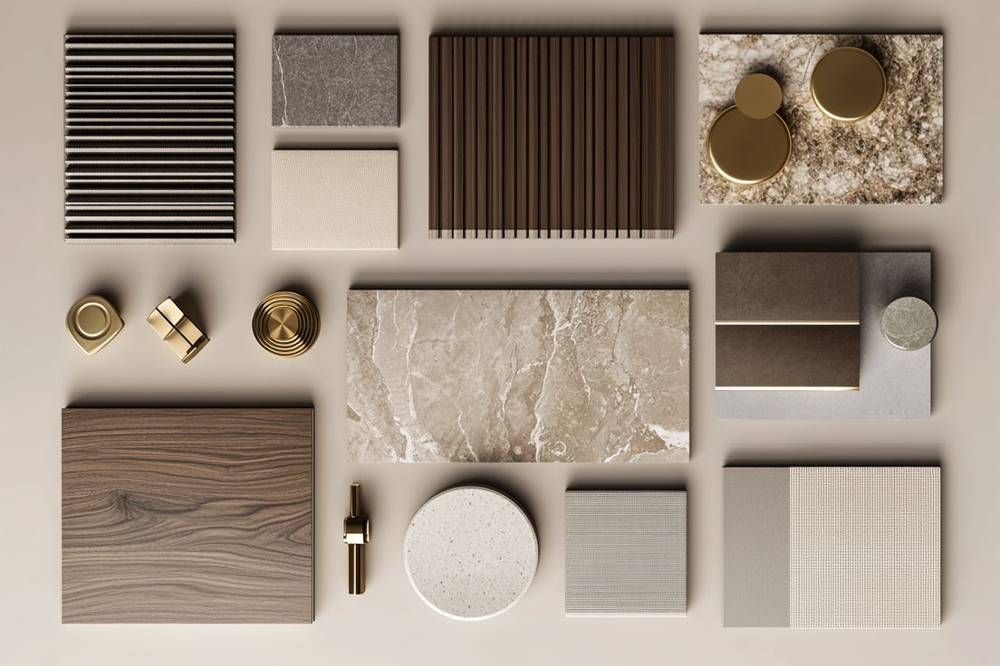
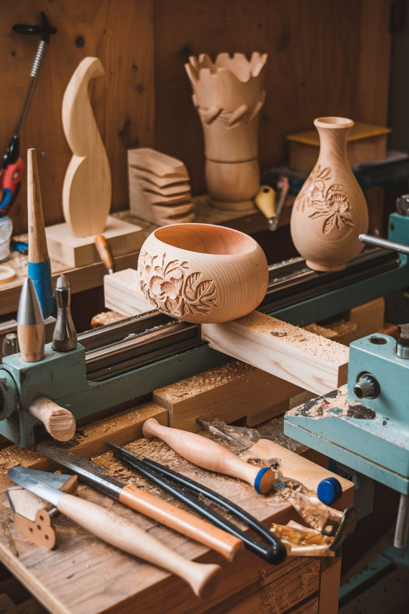
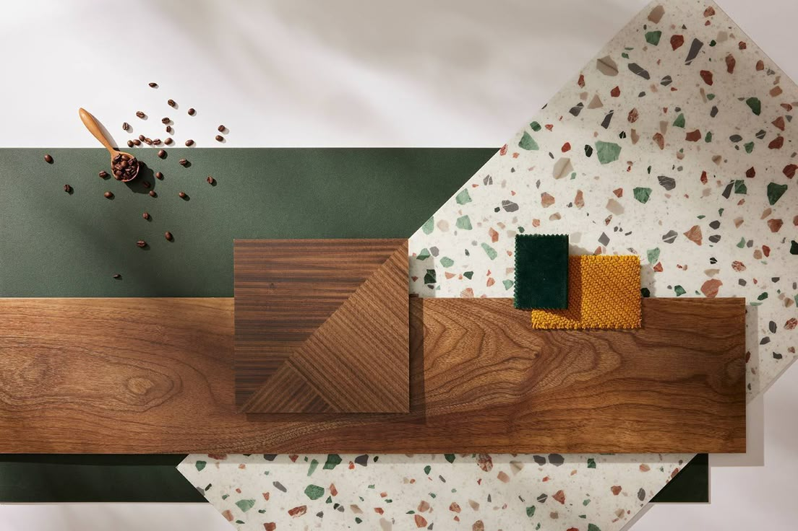

Diseño Interior con Madera: Claves para Crear Espacios Elegantes y Atemporales
La madera
La madera, como material de construcción y expresión, ha ocupado un lugar esencial en la historia del diseño interior. Su versatilidad, calidez táctil y carga simbólica la han convertido en uno de los recursos más valorados por arquitectos y diseñadores a lo largo del tiempo. En este artículo se examina el uso de la madera en la conformación de habitaciones elegantes, a partir de una reflexión crítica y apoyada en ejemplos canónicos de la arquitectura y el diseño contemporáneo e histórico.
La Madera como Expresión de Calidad Arquitectónica
El uso de la madera trasciende el mero ornamento; implica decisiones técnicas, formales y simbólicas. Su aplicación en proyectos interiores de alto nivel ha sido ampliamente documentada. Un ejemplo paradigmático es la Casa Koshino (1984) del arquitecto japonés Tadao Ando, donde el contraste entre el hormigón y las superficies de madera natural genera una atmósfera de sobriedad refinada, en la que cada material encuentra su rol expresivo. Allí, la madera se utiliza con contención, resaltando su presencia por oposición al mineralismo del concreto.
Otro caso emblemático es la Villa Mairea (1939) de Alvar Aalto, que constituye una referencia obligada en cuanto a la incorporación orgánica de la madera en el diseño moderno. Aalto no solo utiliza la madera como revestimiento o estructura, sino que la integra al mobiliario, a las barandillas y a los elementos decorativos, fundiendo tradición y modernidad en una experiencia espacial profundamente sensorial.
La Carpintería como Instrumento Compositivo
Más allá de su función estructural, la madera ha sido utilizada como medio de composición espacial. En los proyectos de Peter Zumthor, como en las Termas de Vals (Suiza, 1996), si bien el material predominante es la piedra, su uso contrastante de la madera en elementos interiores —especialmente en los vestuarios y zonas de transición— evidencia un entendimiento profundo de su potencia táctil y emocional.
La carpintería, cuando es abordada con sensibilidad, actúa como un sistema de orden interno. Los revestimientos murales, techos artesonados, zócalos y marcos de puertas no solo decoran: delimitan jerarquías visuales, articulan circulaciones y refuerzan la unidad formal del espacio. En este sentido, la madera no es añadida como un “extra estético”, sino integrada como parte de la estructura perceptiva del lugar.
El arte y las flores
Materialidad, Acabado y Tiempo
El acabado de la madera es también una declaración de intención. Arquitectos como John Pawson han defendido el uso de maderas claras con acabados mate para enfatizar la pureza de las formas. Su proyecto para el Novy Dvur Monastery (República Checa, 2004) es una lección de minimalismo material, donde el uso del roble en su estado más natural actúa como moderador de la luz y la temperatura del espacio.
La madera, a diferencia de materiales inertes, tiene una evolución visible. Algunos diseñadores contemporáneos, como Kengo Kuma, han trabajado precisamente con esa cualidad. En su proyecto para el GC Prostho Museum Research Center (Japón, 2010), Kuma emplea una compleja retícula de madera inspirada en técnicas tradicionales japonesas, que además de definir el espacio, cambia con el tiempo, oxidándose y adquiriendo una pátina única.
Aplicaciones Funcionales y Personalización
En los espacios domésticos, la madera permite un grado de personalización difícil de alcanzar con otros materiales. Los muebles a medida, las librerías integradas, las puertas ocultas o los escritorios empotrados pueden ejecutarse con una precisión artesanal que responde a las necesidades específicas del habitante. La firma suiza Herzog & de Meuron, en varios de sus proyectos residenciales, ha recurrido a la carpintería artesanal como estrategia para vincular el diseño con el uso cotidiano, dotando al espacio de una dimensión humana y táctil.
Conclusión
La madera, lejos de ser un recurso nostálgico o meramente tradicional, se presenta como un medio contemporáneo de expresión espacial. Su correcta aplicación en habitaciones interiores no solo garantiza belleza y confort, sino también profundidad conceptual y resistencia al paso del tiempo. A través de ejemplos históricos y actuales, se comprueba que la elegancia de un espacio no depende exclusivamente del presupuesto invertido, sino de la inteligencia con la que los materiales son seleccionados, compuestos y vividos. En este marco, la carpintería bien ejecutada no es decoración: es arquitectura.
Referencias
Ando, Tadao. Tadao Ando: Complete Works 1975-Today. Taschen, 2022. Aalto, Alvar. Villa Mairea: Architecture, Furniture and Interior. Alvar Aalto Foundation, 2015. Frampton, Kenneth. Studies in Tectonic Culture. MIT Press, 1995. Zumthor, Peter. Atmospheres: Architectural Environments - Surrounding Objects. Birkhäuser, 2006. Pawson, John. Minimum. Phaidon Press, 1996. Kuma, Kengo. Natural Architecture. Princeton Architectural Press, 2008. Pallasmaa, Juhani. The Eyes of the Skin: Architecture and the Senses. Wiley, 2012.